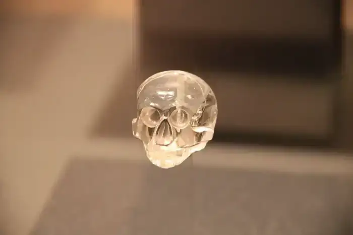
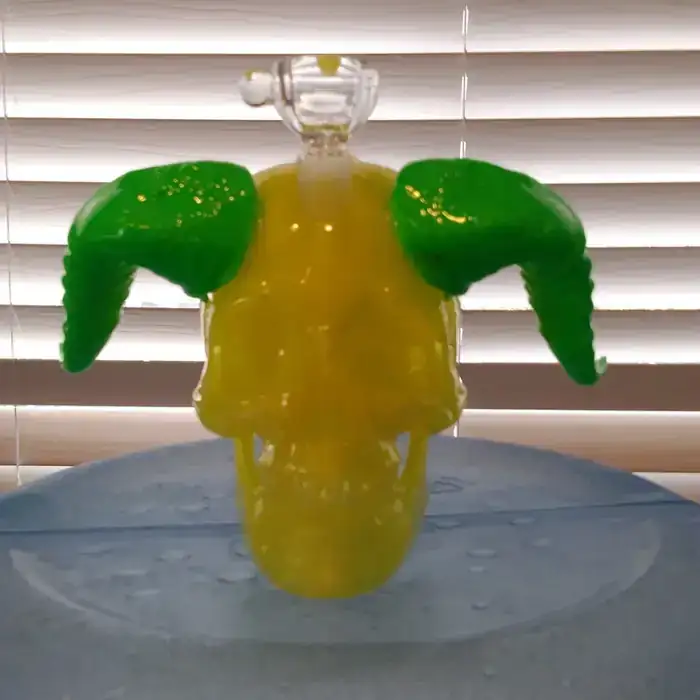
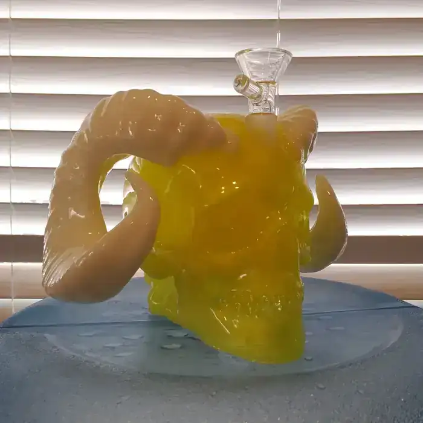

The objects
Around a dozen large crystal skulls are known. They were said to be Aztec or Maya, and were popularised from the 1920s by the explorer F. A. Mitchell-Hedges, who claimed his daughter had found one in a Maya ruin in British Honduras in 1924. The skulls became a fixture of New Age writing, with claims that they were Atlantean, alien, or capable of storing information.
Maps, diagrams and images






The examinations
The British Museum and the Smithsonian submitted their skulls to examination in 1996 and 2005. The British Museum's skull and the Smithsonian's were found to be carved from Brazilian quartz — not a material used by Mesoamerican lapidaries — with tool marks from a rotary cutting wheel and abrasive paste. Those techniques are nineteenth-century European, not pre-Columbian. The Smithsonian's skull was traced to a Mexico City dealer in the 1880s.
The Mitchell-Hedges skull, the most famous, has never been independently examined and has no documented provenance before the 1920s. Its claimed discovery in a ruin is contradicted by the excavation records of the site.
Documented: the skulls exist and are skilfully carved.
Documented: every skull examined by a museum shows nineteenth-century lapidary tool marks and non-Mesoamerican quartz.
Not documented: any pre-Columbian origin, any provenance before the nineteenth century.
Not documented: any effect. The claims about light, energy and information storage have never been tested under controlled conditions, and the one study of 'energy' effects found nothing.
The remaining uncertainty: the Mitchell-Hedges skull, which is unexamined — and which the burden of proof has always been on.
Why it is in the archive
Because the debunking is not rhetorical: it is a microscope, a crystal-origin analysis and a dealer's invoice. The skulls are beautiful objects; the claim about them is a nineteenth-century market with a twentieth-century mythology attached.
Open resources on this topic
- BookThe crystal skulls — Harbinson, W. A. (William Allen), 1941- · 1997 (Internet Archive, free to read)
- BookThe mystery of the crystal skulls — ['Morton, Chris, 1963-', 'Thomas, Ceri Louise, 1962-'] · 1998 (Internet Archive, free to read)
- BookThe mystery of the crystal skulls : unlocking the secrets of the past, present, and future — Morton, Chris, 1963-;Thomas, Ceri Louise, 1962- · 2002 (Internet Archive, free to read)
- PapersOpen-access articles: DOAJ · PubMed Central · Internet Archive Scholar
- BooksPublic-domain and borrowable copies: Open Library · Project Gutenberg · Google Books
Cite this page
Momin, S. (2026). The Crystal Skulls. The Larger World Archive. https://drsamonline.github.io/LARGE_GLOBE/crystal-skulls.htmlMomin, Sohil. “The Crystal Skulls.” The Larger World Archive, 2026, https://drsamonline.github.io/LARGE_GLOBE/crystal-skulls.html.Momin, Sohil. “The Crystal Skulls.” The Larger World Archive, 2026. https://drsamonline.github.io/LARGE_GLOBE/crystal-skulls.html.@misc{the2026crystal,
author = {Momin, Sohil},
title = {The Crystal Skulls},
year = {2026},
howpublished = {The Larger World Archive},
url = {https://drsamonline.github.io/LARGE_GLOBE/crystal-skulls.html},
note = {Last reviewed 20 November 2026}
}Last reviewed 20 November 2026 · Corrections policy · this page is not peer reviewed
Sources for this page
- Wikipedia, “Crystal skull” — the objects, the examinations and the claimsen.wikipedia.org
- Wikipedia, “British Museum” — holder of one examined skullen.wikipedia.org
- Wikipedia, “Lapidary” — the tool marks that date themen.wikipedia.org
- Wikipedia, “Quartz” — the material, and where it came fromen.wikipedia.org